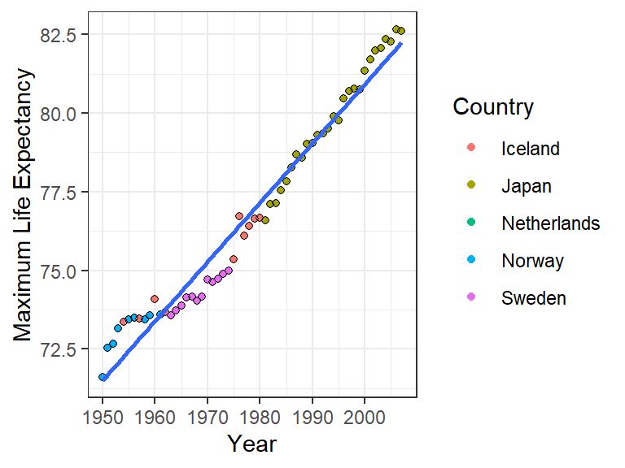

git statusGit Basic
Status, Commit, Push, Pull,…
Basic Git (SEE Git and GitHub- David gerard to complete this note (01-git_github))
Status
- Use
git_statusto see what files git is tracking and which are untracked.
- Git should tell you that everything is up-to-date
On branch main Your branch is up to date with ‘origin/main’.
nothing to commit, working tree clean
- Edit the README.md file to include your name, so that it looks something like this:
test
David Gerard
Repo for trying out GitHub.
Make sure to save your changes.
Always check which files have been added:
::: {.cell layout-align=“center”}
git status:::
Staging
Use
git addto add files to the stage.::: {.cell layout-align=“center”}
git add life_exp_analysis.Rmd:::
Useful flags for
git add:--allwill stage all modified and untracked files.--updatewill stage all modified files, but only if they are already being tracked.
Committing
Use
git committo commit files that are staged to the commit history.::: {.cell layout-align=“center”}
git commit -m "This adds life_exp_analysis.Rmd, an empty Rmd file.":::
Your message (written after the
-margument) should be concise, and describe what has been changed since the last commit.If you forget to add a message, git will open up your default text-editor where you can write down a message, save the file, and exit. The commit will occur after you exit the text editor.
If your default text editor is vim, you can exit it using this.
git statusshould now be clear because there are no modified files:::: {.cell layout-align=“center”}
git status:::
You can see all of your commits using
git log.::: {.cell layout-align=“center”}
git log:::
Exercise: As a next step in the analysis of the
gapminder_unfiltereddata frame, add code in life_exp_analysis.Rmd that- Loads the
gapminder_unfiltereddata frame into R, and - Calculates the maximum life expectancy each year and the corresponding country that had that maximum life expectancy. Hint: There are multiple ways to do this, but the easiest involves
group_by()andfilter().
Also, change the header from “Analysis” to “Life Expectancy Analysis”. Then save life_exp_analysis.Rmd.
::: {.cell layout-align=“center”}
:::
- Loads the
Look at changes
Use
git diffto see changes in all modified files.::: {.cell layout-align=“center”}
git diff:::
Lines after a “
+” are being added. Lines after a “-” are being removed.You can exit
git diffby hittingq.Exercise: Check the status of your modified files. Then stage your modified files, but don’t commit yet. Recheck your status.
::: {.cell layout-align=“center”}
:::
git diffwon’t check for changes in the staged files by default. But you can see the differences usinggit diff --staged.::: {.cell layout-align=“center”}
git diff git diff --staged:::
Exercise: Commit your changes. Use a nice commit message.
Share Code Using GitHub
GitHub is a website that hosts git repositories. Only noobs confuse git with GitHub. So when you write up your resume, you should say you know git, not GitHub.
To host a repository on GitHub you need to
- Create a repo on GitHub.
- Tell git where GitHub is going to host your repo.
- Tell git to move your commits (“push”) to GitHub.
Create a Repository on GitHub
Create a repo on GitHub by selecting “New” on the homepage:

Or go to the “Repositories” tab and select “New”


Tell GitHub the name of your repo. In general, it can be a different name than the repo on your local machine. For this class, name it “life_exp_USERNAME” where “USERNAME” is your GitHub username.
Make a small description, then click “Create Repository”.

Tell git where GitHub will host your repository.
Use
git remote addto tell git where we will host our repo.::: {.cell layout-align=“center”}
git remote add origin https://github.com/dcgerard/life_exp_dcgerard.git:::
In the above command, “
origin” is just a nickname we gave to location that is hosting our repo. We could have used “github” or “deep_space_nine” instead, but “origin” is traditional.The URL is the location of the repo. It is generally of the form “https://github.com/dcgerard/GitHubRepoName.git” where “GitHubRepoName” is whatever you chose to name the repo on GitHub. You should have a different GitHubRepoName than the one I used.
Push your repo to GitHub
Use
git pushto push commits to GitHub.If you are pushing to a brand new repo on GitHub, you need to use:
::: {.cell layout-align=“center”}
git push -u origin master:::
Otherwise, you can just type:
::: {.cell layout-align=“center”}
git push:::
The terminal should ask you for your GitHub username and password.
When the push is complete, your code is now up on GitHub.

Exercise: Add some comments before your code chunk in life_exp.Rmd describing what the code is doing. Then save the file, stage the file for commit, commit the changes, then push the changes to GitHub.
Collaborate Using GitHub
- There are two workflows for collaborating depending on the nature of the collaboration:
Branching workflow for collaboration
A branch is an “alternative universe” of your project, where you can experiment with new ideas (e.g. new data analyses, new data transformations, new statistical methods). After experimenting, you can then “merge” your changes back into the master branch.
Branching isn’t just for group collaborations, you can use branching to collaborate with yourself, e.g., if you have a new idea you want to play with but do not want to have that idea in master yet.
The “master” branch (the default in GitHub) is your best draft. You should consider anything in “master” as the best thing you’ve got.
The workflow using branches consists of
- Create a branch with an informative title describing its goal(s).
- Add commits to this new branch.
- Merge the commits to master
Create a branch
You create a branch with the name
<branch>by::: {.cell layout-align=“center”}
git branch <branch>:::
Suppose we wanted to calculate some summary statistics, but we are not sure if we want to include these in the report. Let’s create a branch where we explore these summary statistics.
::: {.cell layout-align=“center”}
git branch sumstat:::
You can see the list of branches (and the current branch) with
::: {.cell layout-align=“center”}
git branch:::
Move between branches
You switch between branches with:
::: {.cell layout-align=“center”}
git checkout <branch>:::
Move to the sumstat branch with
::: {.cell layout-align=“center”}
git checkout sumstat:::
Edit Branch
When you are on a branch, you can edit and commit as usual. Do this now with the following exercise:
Exercise: Calculate the average life expectancy (averaging over countries) in 2000. Add this to life_exp_analysis.Rmd. Commit your changes.
::: {.cell layout-align=“center”}
:::
Push branch to GitHub
You can push your new branch to GitHub just like you can push your master branch to GitHub:
::: {.cell layout-align=“center”}
git push origin <branch>:::
Merge changes into master
Suppose you are satisfied with your changes in your new branch, then you’ll want to merge these into the master branch. You can do this on GitHub (see here). If you do so, then don’t forget to pull the changes from master back into your local machine.
::: {.cell layout-align=“center”}
git pull origin master:::
Alternatively, you can merge the changes in your local machine. First, checkout the master branch.
::: {.cell layout-align=“center”}
git checkout master:::
Then use
mergeto merge the changes from<branch>into master.::: {.cell layout-align=“center”}
git merge sumstat:::
Don’t forget to push your changes to GitHub
::: {.cell layout-align=“center”}
git push origin master:::
Resolving Merge Conflicts
If two branches with incompatible histories try to merge, then git does not merge them.
Instead, it creates a “merge conflict”, which you need to resolve.
Instructions on resolving merge conflicts can be found here: https://help.github.com/en/github/collaborating-with-issues-and-pull-requests/resolving-a-merge-conflict-using-the-command-line
Forking workflow for collaboration
“Forking” is another form of collaboration, where you contribute to a repo that you do not own.
“Forking” means to create a copy of a repo.
The steps to collaborate in the forking pipeline is:
- Fork a repo to your GitHub account.
- Clone your forked repo to your local machine.
- Edit-stage-commit the files.
- Push the files back to your forked repo.
- Request the original owner to pull your changes into their repo (a “pull request”).
Let’s use the forking pipeline to extend each-other’s code to finalize the plot.
Fork
Pair-up and exchange your GitHub username. Search for that person on GitHub, and go to their “life_exp_USERNAME” repository. The url should be something like “https://github.com/PARTNERNAME/life_exp_PARTNERNAME” where “PARTNERNAME” is your partner’s username.
At the top right, click the “Fork” button.
This will create a version of your partner’s repo on your own GitHub page.
Clone
If there is a repo already up on GitHub, you can clone a copy to your local machine.
Use
git cloneto create a local version of a repo on GitHub.Navigate to a directory (outside of your own git repo) where you would like to place your partner’s git repo.
Clone the forked version of your partner’s repo to your local machine:
::: {.cell layout-align=“center”}
git clone https://github.com/USERNAME/life_exp_PARTNERNAME.git:::
You should be able to see the new repo:
::: {.cell layout-align=“center”}
ls:::
Note: You can clone not just repos that you’ve forked, but any git repo that you have access to online (e.g. public repos).
Edit, commit, push
Enter the new repo (the forked version of your partner’s repo).
Exercise: In your partner’s file, create a scatterplot of year versus maximum life expectancy. Color code by country, and add a single OLS line. Your plot should look like this:
::: {.cell layout-align=“center”} ::: {.cell-output-display}

::: :::Exercise: Save the modified file, then stage and commit the changes. Finally, push the changes to your forked repo.
Submit pull request
A “pull request” is a request for your partner to incorporate the changes that you made in your forked version of their repository.
Navigate to your forked version of your partner’s repo up on GitHub. Then click on “New pull request”.

Write an informative title and message on what your code does, then click “Create pull request”.

Accept pull request
You can view all pull requests that folks have sent you from the “Pull requests” tab.

After you navigate to the pull request your partner sent you, you can see the changes that they made under the “Files changed” tab. You can write comments — for example asking them to change the code before you accept the merge request. Or you can can just accept the merge request by hitting “Merge pull request”.

Pull changes to your local machine.
Use
git pullwhenever there are modifications on GitHub and you want to bring your local repo up-to-date.::: {.cell layout-align=“center”}
git pull:::
Best Practices
Commit fairly frequently. On the homework, you should commit each time you complete a homework question.
Usually, you should only commit plain text. The reason for this is that git is actually tracking changes in files, not the files themselves. This is very efficient for plain text files. But for non-plain text files the whole file is usally changed when you change a component, so git ends up saving the whole file each each time you change it.
Parting Wisdom from XKCD